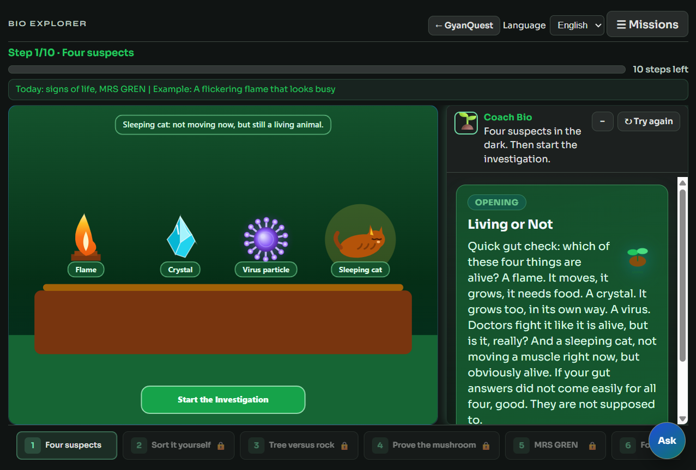
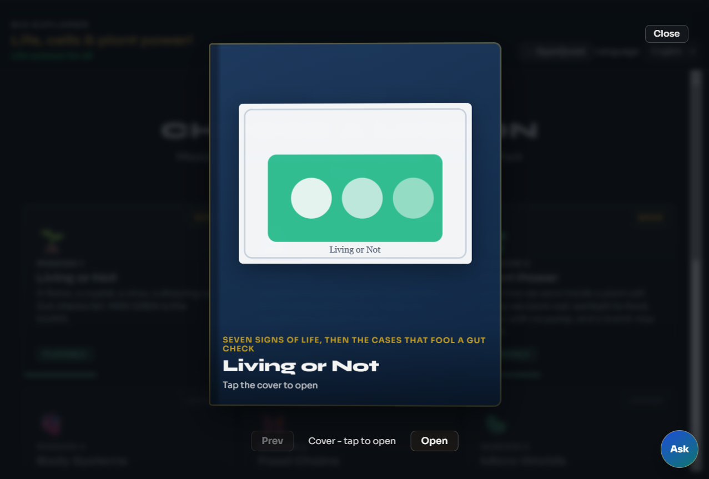

Every subject game runs in the browser as an interactive Canvas 2D lab: drag, sort, grow, score, and retry.
Missions follow a 10-step path with a coach panel, step rail, hints, and progress that saves on the device.

Live snapshot · Bio Explorer · Mission 1 · Step 1 canvas + coach
What it is
HTML5 Canvas scenes drawn in real time. Shared engine powers 28 subject games with the same mission hub pattern.
Mission hub with playable cards
10 steps per mission
Coach Bio + activity card
Step rail locks until you finish
How a student uses it
Open a game (example: Bio Explorer)
Choose a mission, tap Start
Act on the canvas: tap, drag, sort, grow
Use Hint if stuck; continue all 10 steps
Progress restores after reload
On-screen layout
Viewport: interactive Canvas lab
Coach: short spoken-style guidance
Activity card: narration + controls
Steps 1-10 + Ask tutor FAB
Pedagogy + tech
Learn-by-doing; English / বাংলা
Phone-friendly, no install
localStorage save-v2
Optional API progress sync
GyanQuestFeature sheet 02 / 04
Digital Book
Mission books that feel like a real text
Each mission unlocks a digital book: cover, page-turn spreads, figures, and glossary terms.
Finish the 10 steps to unlock, or use Unlock books on the landing page for demos.

Live snapshot · Bio Explorer · Living or Not book cover
What it is
Full-screen book viewer in every game. Fixed pages, figure carousels, clickable glossary words.
Cover + Open / Prev / Next
Curriculum spreads + art
Red terms open the tutor
How a student uses it
Complete mission or unlock books
Tap Read book on the hub
Open cover, turn spreads
Tap red words for explanations
Locking
Default: locked until mission done
Landing: Unlock books: On
Same engine for all 28 games
Engine files
digital-book.js / .css
mission-books.js
Per-game books/ packs
GyanQuestFeature sheet 03 / 04
AI Tutor
Ask anything - GyanQuest Tutor
Floating tutor on every game. Type a question or tap a red book term.
Groq answers via /api/chat so the API key never ships to the browser.
Live snapshot · Ask FAB open · Tutor over Living or Not
What it is
Blue Ask FAB
Chat panel + Send
Book terms auto-open tutor
Session message history
How to use
Tap Ask anytime
Ask in plain language
Or tap a red glossary word
Close and keep playing
Backend
tools/groq_proxy.py
GROQ_API_KEY in .env
Offline play without chat OK
engine/js/book-chat.js
Why it matters
Students get help in the moment - during a Canvas step or inside a book - without leaving the mission.
GyanQuestFeature sheet 04 / 04
3D Lab
Specimen Lab - orbit real 3D models
Three.js lab for Sketchfab models: cells, organs, DNA, engines, space hardware.
Numbered pins mark parts. Tap to zoom and read. Drag pins if a label sits off.